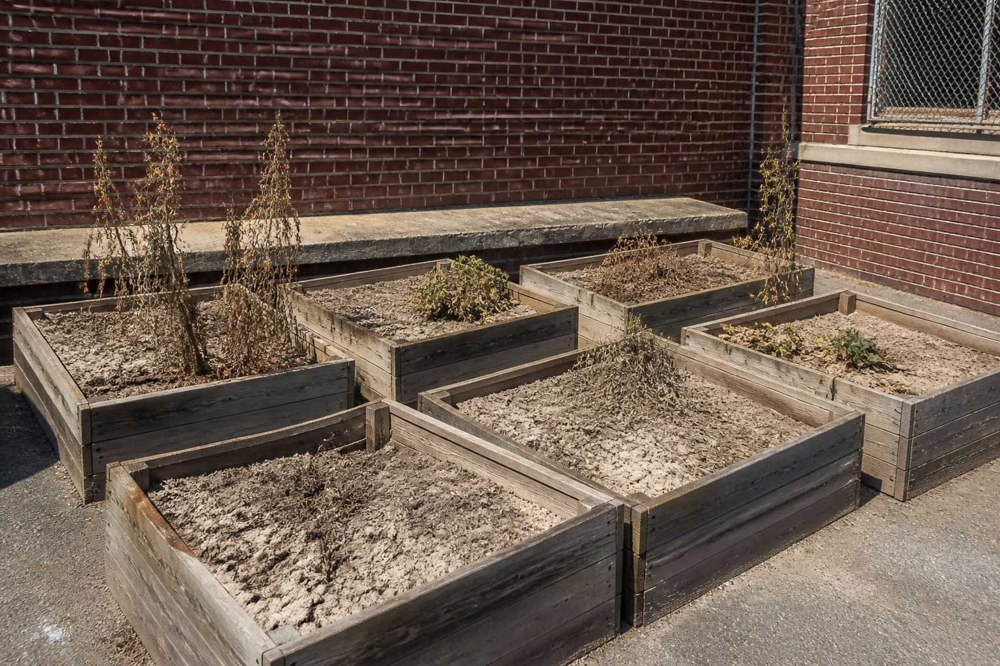

Parcours affiché : tous.
| Code | Je serai capable de… | Où, dans ce lot |
|---|---|---|
| 4e_C7.1 | Organiser un processus de conception et de réalisation dans une durée, avec des tâches identifiées. | Activité 1 (diagramme + planning) |
| 4e_C7.2 | Proposer et fabriquer une solution pour ajouter une nouvelle fonction à un OST (croquis, schéma, graphique, algorithme, modélisation). | Activité 2 · REFAIRE (ajouter une fonction au FAST) · TP du dé (modélisation) |
| 4e_C7.3 | Comparer différents matériaux pour choisir le plus adapté. | Activités 0 et 3 (banc météo puis tableau) |
Référence normative : programme de technologie du cycle 4, BO n°9 du 29 février 2024. Codification opérationnelle : les codes 4e_C7.1 · 4e_C7.2 · 4e_C7.3 servent à ranger les séquences ; ils ne viennent pas du programme officiel.
Le mode essentiel masque les corrections et les compléments : il ne reste que les consignes et les exercices.
Pour toi, sans note : coche ce qui est déjà en place. Sous chaque ligne, un lien pour le reprendre si tu n'en es pas sûr·e.
→ pas encore sûr·e ? relis « Les trois mots du programme » dans la synthèse de l'atelier de planification
→ pas encore sûr·e ? relis « Un matériau excellent peut-il être écarté quand même ? » dans la synthèse 5e_C7.3
→ pas encore sûr·e ? relis la partie 2 de la synthèse 5e_C4.1 à C4.8, « Quelles sont les deux chaînes du lampadaire ? »
Dans cette séquence : on te donne un problème, pas un objet. Six bacs sont morts dans la cour, et c'est à toi de décider ce qu'il faut construire — puis d'organiser le travail pour y arriver, en écrivant toi-même le planning.
Un mot à garder en tête : une tâche, c'est une chose dont on peut dire, à un instant donné, si elle est terminée ou non.
Fin août, la rentrée. La cour de la Brooklyn Middle School. Contre le mur sud, six grands bacs en bois que les 4e de l'an dernier ont plantés en juin : tomates, menthe, fraisiers. Deux mois plus tard, il n'en reste rien. La terre a la couleur du carton et se fend en plaques. Personne n'était là pour arroser pendant les vacances.
Mme Ortiz, qui a monté le projet avec eux, ne veut pas recommencer pour rien :
« Replanter, d'accord. Mais je ne replante pas si personne ne peut arroser en juillet. Je veux que ça s'arrose tout seul quand la terre est sèche. Et je veux que l'électronique tienne dehors — il pleut, il gèle, et il y a des gamins qui shootent dans les bacs. »
Le cœur du système, c'est une petite sonde plantée dans la terre, qui sait dire si elle est sèche ou humide. Le problème, c'est que cette sonde est nue : des fils, une carte, rien autour. Sous la pluie, elle rend n'importe quoi ; sous le gel, elle casse.
Voilà ce que tu vas concevoir : le boîtier qui protège cette sonde. Une boîte qui laisse passer la terre et l'eau vers le capteur, mais pas la pluie vers l'électronique. Qui tienne un coup de pied. Et qu'on puisse ouvrir pour changer la pile.
Dans le métier, on appelle ça un boîtier d'exposition extérieure, et on mesure sa qualité par un indice de protection : deux chiffres, un pour la poussière, un pour l'eau. Tu croiseras ce mot sur les lampadaires et les caméras de rue.

Comment imaginer, choisir et réaliser une solution technique simple pour un espace vert scolaire à New York ?
Le niveau attendu est exactement le même qu'avec la consigne libre : ces débuts de phrases retirent l'obstacle de la rédaction, pas l'exigence.
💾 Sauvegarde automatique dans la page, à chaque modification.
Cette séquence s'appuie sur le mini-projet de 5e. Trois questions pour savoir, toi comme le professeur, sur quoi on peut s'appuyer. Elles ne comptent pas dans ta progression et ne sont pas notées — « je ne sais pas encore » est une réponse utile.
FAIRE pour comprendre : tu commences par SOUMETTRE des matériaux à la météo new-yorkaise (banc météo, activité 0) — avant tout tableau de critères.
COMPRENDRE : les « À retenir » nomment les concepts : contrainte, critère, démarche de projet.
REFAIRE pour comprendre encore : tu réinvestis la démarche complète sur un NOUVEAU besoin (une jardinière de balcon) — même squelette, autre habit.
🅰 Avec maquette : tu construis réellement le boîtier en atelier (carton-plume, bois de récupération), et tu le soumets à l'arrosoir et au congélateur du labo. Les critères du tableau se vérifient à la main.
🅱 En simulation : le banc météo de l'activité 0 remplace l'atelier, et la modélisation du boîtier se fait dans Onshape (TP « Le dé sur sa pointe », lié en bas de page). C'est le parcours principal.
🅲 Sur papier : croquis coté à la main et tableau de comparaison — mêmes questions, mêmes validations. Le banc météo fonctionne dans la page, sans rien installer.
Chaque activité validée se colore ici. Rien ne se perd si tu t'arrêtes en route.
Question directrice : qu'est-ce qui a tué les six bacs, et comment passe-t-on d'un problème à une solution choisie avec des critères ?
Au programme : l'ouverture, puis le banc météo new-yorkais (activité 0, environ 10 min), la démarche de projet en diagramme et le planning (activité 1, environ 15 min), imaginer deux solutions et en choisir une (activité 2, environ 25 min).
Consigne : AVANT tout tableau, choisis un matériau et une météo, et OBSERVE ce qui se passe. Essaie au moins trois combinaisons différentes.
Q1 — Quel matériau survit le MIEUX à la pluie ?
Q2 — Quelle météo détruit le carton même renforcé ?
Le plastique récupéré ignore la pluie (il ne l'absorbe pas) ; le carton, même renforcé, se délite à la pluie — c'est sa contrainte fatale. Le bois de palette gonfle mais tient s'il est traité. Ce que tu viens d'ÉPROUVER au banc, le tableau de l'activité 3 va le NOMMER : on appelle ça des contraintes (imposées par le milieu) et des critères (ce qu'on mesure pour choisir).
La démarche que tu vas suivre pendant les six séances du projet — les deux de cette page, puis l'atelier de planification et le TP « Le dé sur sa pointe » — se DESSINE. Numérote les étapes de 1 à 5 :
1 — Besoin (tout projet commence par un besoin, jamais par une solution). 2 — Plusieurs solutions (au pluriel : une seule idée n'est pas une conception). 3 — Choisir (le losange : une décision s'appuie sur des critères EXPLICITES, sinon c'est un caprice). 4 — Réaliser (le prototype matérialise le choix). 5 — Tester, avec la flèche qui remonte : un test raté ne tue pas le projet, il RENVOIE aux solutions — c'est la boucle d'amélioration. Ce diagramme de flux est la même famille d'objets que l'algorigramme du programme (séquence 4e_C9) : étapes, décision, boucle.
| # | Tâche | min |
|---|---|---|
| 1 | 15 | |
| 2 | 25 | |
| 3 | 20 | |
| 4 | 40 |
Exemple : 1 — « Formuler le besoin du jardinier (arroser sans gaspiller) » · 2 — « Croquis de 2 supports (poteau / potence) » · 3 — « Comparer bois / plastique au banc météo » · 4 — « Découper, assembler, fixer ». Un planning = tâches CONCRÈTES + durée + ordre logique.
Choisir une solution « avec des critères », c'est partir des lignes du cahier des charges que Mme Ortiz a dictées. Avant de choisir, cinq minutes pour retrouver ce que dit chaque case d'une ligne.
Ce que dit un cahier des charges, en trois mots : pour chaque fonction, un critère, un niveau et une flexibilité. Les mots de référence :
🐙 La leçon complète, avec un cahier des charges entier à compléter : l'atelier de 4e « Le diagramme des interacteurs extérieurs », exercice 6, « Le cahier des charges : critère, niveau, flexibilité », et son cours.
Complète ces deux lignes du cahier des charges du boîtier de la sonde, directement dans le tableau : chaque case à menu attend une réponse.
✅ Tu as réussi si… les 9 cases justes, et tu sais dire pourquoi chaque piège ne va pas.
Remplis le tableau colonne par colonne. Pour chaque case, relis la définition du mot, juste au-dessus, dans « Les mots du cahier des charges ».
📌 À retenir : chaque fonction du cahier des charges (FP ou FC) a une désignation qui commence par un verbe à l'infinitif, un critère (ce qu'on mesure), un niveau (un nombre et son unité) et une flexibilité (l'écart que le client accepte, de F0 impératif à F3 très négociable).
⚠ Le piège classique : prendre le niveau (« au moins… ») pour le critère, écrire un niveau sans unité, ou choisir la flexibilité d'après l'importance de la fonction au lieu de l'écart que le client accepte.
Mêmes exigences : deux solutions distinctes, et deux critères nommés.
Deux solutions RÉELLEMENT différentes (pas deux variantes de la même), puis un choix argumenté par 2 critères nommés — par exemple « résistance à la pluie » (contrainte du banc météo !) et « facilité de montage par des élèves ». Le besoin et la faisabilité passent avant l'esthétique.
Question directrice : quel matériau pour le boîtier — et la même démarche marche-t-elle sur un autre objet ?
Au programme : comparer les matériaux (activité 3, environ 20 min), le réinvestissement : ajouter une fonction au diagramme FAST d'un jardin, puis la jardinière de balcon (environ 30 min) ; ensuite la synthèse, le Bonus, le bilan et le renvoi vers le QCM.
Et après cette page : les séances 3 à 6 du projet se font sur les deux pages liées en bas de cette séance — l'atelier de planification (une séance, au lancement de la réalisation) et le TP « Le dé sur sa pointe » (trois séances, avant de dessiner le boîtier).
Reporte ce que le banc météo t'a APPRIS (activité 0) dans le tableau — c'est le passage du geste au formalisme :
| Matériau | Tenue humidité / gel | Découpe | Impact environnemental |
|---|---|---|---|
| Bois palette | |||
| Plastique récup | |||
| Carton renforcé |
Bois palette : tenue Moyenne (gonfle, mais tient traité) · découpe Facile · impact Faible (réemploi). Plastique récup : tenue Bonne (n'absorbe pas l'eau) · découpe Moyenne (outillage) · impact Faible (réemploi — mais fin de vie délicate). Carton renforcé : tenue Faible (la pluie le délite — tu l'as VU au banc) · découpe Facile · impact Faible. Le « meilleur » matériau n'existe pas dans l'absolu : il dépend des contraintes du lieu.
La sonde que protège ton boîtier sert à arroser tout seul quand la terre est sèche. Voici un système d'arrosage de ce genre, déjà construit, dans le jardin partagé d'un autre quartier : sa gardienne lui demande une nouvelle fonction. Tu complètes son diagramme FAST — la fonction qui manque, sa solution, et ce qui change ailleurs —, puis tu déroules la démarche sur la jardinière de balcon. Un exercice d'environ un quart d'heure ; il se vérifie tout seul et a sa correction complète.
| Constituant | Fonction technique | Chaîne |
|---|---|---|
| le lecteur de badge | lire le badge présenté | information — acquérir |
| la carte programmable | décider d'ouvrir ou non | information — traiter |
| l'afficheur de l'entrée | indiquer le nombre de places libres | information — communiquer |
| le moteur | lever la barrière | énergie — convertir |
Le cours complet, avec les schémas et les mots : la synthèse.
Pendant les vacances, la cuve s'est vidée sans que personne le sache, et les plantes ont souffert. La gardienne, Mme Joseph, demande une nouvelle fonction : « prévenir la gardienne quand la cuve est presque vide ».
Pour la prévenir, le système doit d'abord savoir combien d'eau reste dans la cuve : aucune branche du FAST ne le fait encore. La branche du bas est vide : c'est à toi de la construire. Ce que tu écris s'affiche dans le schéma.
Une fonction technique dit ce que le système doit faire, avec un verbe à l'infinitif ; la solution est l'élément qui le fait.
✅ Tu as réussi si… ta fonction commence par un verbe et parle de l'eau de la cuve, sans nommer d'objet ; la solution est juste ; tu réutilises le module Wi-Fi et tu vois que le programme de la carte change.
Lis la demande de Mme Joseph et demande-toi : que doit savoir le système pour pouvoir la prévenir ? C'est la fonction qui manque. Puis cherche, dans les branches déjà là, ce qui sait déjà envoyer au smartphone.
Prévenir quand la cuve est presque vide → il faut connaître l'eau qui reste → aucune branche ne la mesure.
→ Fonction : « mesurer le niveau d'eau de la cuve » (un verbe, puis sur quoi il porte).
→ Solution : le capteur de niveau d'eau (le capteur d'humidité mesure la terre, pas la cuve).
→ Envoyer : le module Wi-Fi le fait déjà → on le réutilise.
→ Décider : la carte doit comparer le niveau à un seuil → son programme change.
📌 À retenir : pour ajouter une fonction, on écrit d'abord la fonction technique qui manque (un verbe), puis on lui choisit une solution ; on réutilise ce qui existe déjà, et on dit ce qui change ailleurs (souvent le programme).
⚠ Le piège classique : écrire le nom d'un objet (« un capteur de niveau ») dans la case de fonction : la fonction dit ce qu'il faut faire, la solution dit avec quoi.
🌳 Ces exercices viennent de l'atelier de 4e « Des fonctions aux solutions techniques » : ce que tu fais ici s'y retrouve, avec l'exercice qui relie chaque constituant de ce système à sa fonction, et le QCM de l'atelier.
Nouveau besoin : une jardinière de balcon pour un appartement de Brooklyn (vent fort, peu de place, arrosage rare). Déroule la MÊME démarche en 4 lignes : besoin → 2 idées → choix (1 critère) → matériau :
C'est le même squelette qu'à l'activité 2 : changer l'objet, garder la boucle.
Exemple : besoin = cultiver malgré vent et absence ; A = jardinière suspendue à réserve d'eau, B = bac lesté au sol ; choix = B, critère « résiste au vent de canyon » ; matériau = plastique récupéré (pluie + légèreté). Ce que tu viens de refaire avec la jardinière, tu l'avais déjà fait avec le support de capteur — le concept commun s'appelle la démarche de projet (besoin → idées → choix → réalisation → test).
Besoin → idées → choix par critères → réalisation → test. Tu as d'abord FAIT (banc météo), puis COMPRIS (contraintes et critères, démarche dessinée en diagramme de flux), puis REFAIT (la jardinière de Brooklyn) : le concept invariant s'appelle la démarche de projet — et son diagramme est de la même famille que l'algorigramme que tu retrouveras dans la séquence 4e_C9 (étapes, décision, boucle). CRCN 3.1 Développer des documents textuels et 1.2 Gérer des données prouvés par traces (planning, choix écrit, sauvegarde), pas par l'ouverture d'un écran.
Citoyen : une solution 100 % réemploi de quartier new-yorkais — d'où viendraient tes matériaux ?
Des matériaux qui ont déjà servi, trouvés dans le quartier, et qui passent le banc météo. Par exemple : un bidon ou une boîte alimentaire en plastique épais, récupéré auprès d'une épicerie ou d'une cantine, pour la boîte elle-même — le plastique récupéré ignore la pluie ; des lattes de palette, récupérées auprès d'un commerce ou d'un chantier, pour le piquet ou le support ; une chambre à air de vélo usée, chez un réparateur, découpée en joint autour du couvercle ; des vis de récupération.
Ce qu'on vérifie avant de prendre : que le matériau tient les contraintes du lieu — le banc météo a montré que le carton, même renforcé, se délite à la pluie : il est exclu dehors ; qu'il est sain — une palette marquée « HT » a été traitée par la chaleur, mais une palette marquée « MB » a été traitée avec un produit toxique : elle ne se réemploie pas ; et qu'on a demandé avant de récupérer.
Attendus : au moins deux matériaux, chacun avec sa source précise dans le quartier et la contrainte qu'il tient (pluie, gel, vent).
Erreurs typiques : proposer du carton — le banc l'a éliminé ; « acheter des matériaux recyclés » — ce n'est plus du réemploi de quartier ; oublier de vérifier ce que le matériau a contenu ou subi avant.
Technique : invente un critère de test « résistance au gel » ou « vent de canyon » (étape + résultat attendu chiffré) :
Un test, c'est une étape qu'on peut refaire et un résultat attendu qu'on peut mesurer. Deux exemples :
Attendus : une étape concrète (avec quoi, combien de temps, dans quelles conditions) ; un résultat attendu chiffré, écrit avant l'essai ; un critère qui vise une contrainte du lieu.
Erreurs typiques : « le boîtier doit résister au gel » — c'est un souhait, pas un test ; un attendu sans chiffre (« ça tient ») ; tester le gel à vide — c'est l'eau de la terre qui gonfle en gelant ; changer deux choses à la fois, et ne plus savoir laquelle a joué.
New York : quels rooftops / community gardens de la ville pourraient accueillir un suivi d'humidité ?
Un bon lieu, c'est un jardin où l'on cultive, où personne n'arrose certains jours, et où l'on peut protéger et relever la mesure. À New York, par exemple : les jardins partagés de quartier (community gardens) — la ville en compte plusieurs centaines, dont beaucoup sont suivis par son programme GreenThumb ; les fermes installées sur les toits (rooftop farms), à Brooklyn ou dans le Queens ; les jardins d'école, comme celui de la Brooklyn Middle School de la situation.
Chaque lieu change le cahier des charges : sur un toit, le vent et le plein soleil (le boîtier doit être lesté, et sa sonde protégée de la chaleur) ; dans un jardin ouvert au public, les gestes des passants (le boîtier doit se fermer et se fixer) ; dans une cour d'école, les vacances, où personne ne lit la mesure.
Attendus : au moins deux lieux ou deux sortes de lieux ; pour chacun, pourquoi un suivi d'humidité y sert, et une contrainte propre au lieu.
Erreurs typiques : citer un parc où l'on ne cultive rien (une pelouse déjà arrosée par la ville) ; oublier que le lieu change les contraintes du boîtier ; choisir un lieu où personne ne lira jamais la mesure.
Retour à mon hypothèse : ce que tu imaginais construire au début est-il le boîtier que tu as conçu, et qu'est-ce que le banc météo t'a fait changer ?
Comment j'ai travaillé : où as-tu hésité, et qu'est-ce qui t'a surpris au banc météo ou en comparant les matériaux ?
J'ai appris :
Je sais faire :
À revoir :
Les quatre niveaux sont ceux du livret scolaire :
maîtrise insuffisante · maîtrise fragile · maîtrise satisfaisante · très bonne maîtrise.
Aucun n'est une note : choisis celui qui décrit ce que tu fais aujourd'hui.
Confiance CRCN 3.1 Développer des documents textuels (1-4) :
Deux pièces à emboîter. Le boîtier qui protège la sonde, ce sont deux pièces : une boîte et son couvercle, qui doit s'y emboîter. Avant de les dessiner, il faut savoir faire entrer une pièce dans une autre — avec du jeu — et obtenir des formes rondes, que l'extrusion ne sait pas faire.
Onze paliers, en trois séances. Le geste nouveau est la révolution : on ne dessine pas l'objet, on dessine sa coupe et on la fait tourner. Toutes les cotes du socle viennent de variables — et du nombre d'or : change un nombre, toute la pièce suit. Enfin, un dé posé sur sa pointe creuse sa place dans le socle, avec un quart de millimètre de jeu : exactement ce qu'il faudra entre la boîte et son couvercle.
Le programme demande, en 4e, de ORGANISER un processus de réalisation d'un objet avec des tâches identifiées. Tu reçois la liste des tâches du jardin connecté et leurs durées, sans les dates. Ton travail : les organiser — établir ce que chaque tâche doit attendre, et trouver celles qui peuvent avancer en même temps.
Cet atelier est partagé par les trois niveaux : il se place au lancement du projet, dure une séance, et se fait aussi bien avec des bandes de papier qu'avec le logiciel.
30 questions — organiser, proposer une solution, comparer les matériaux. 3 questions illustrées ; chaque proposition fausse est réfutée.
🚀 Ouvrir le QCM d'entraînement